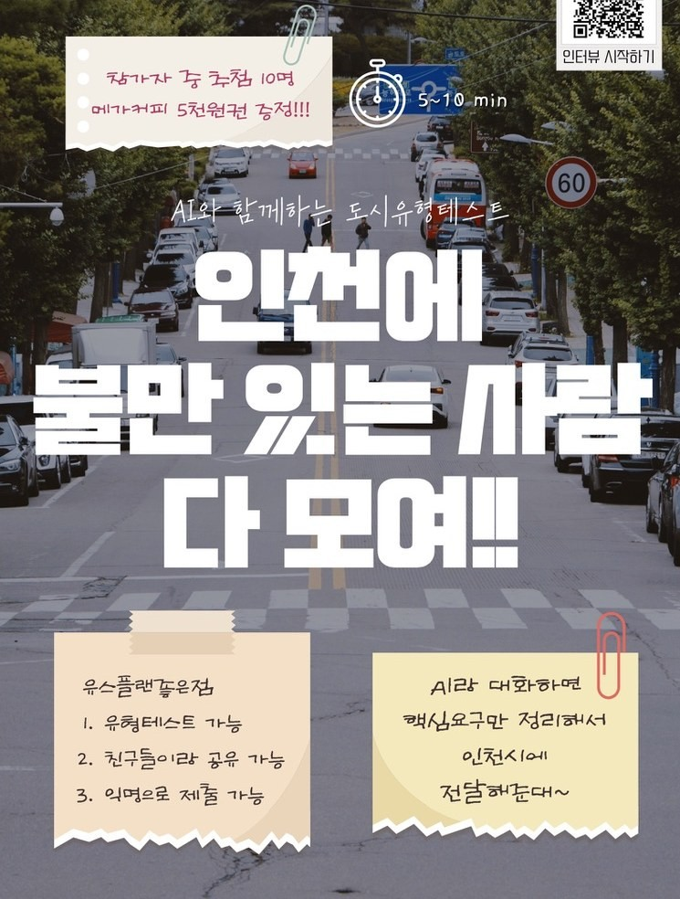
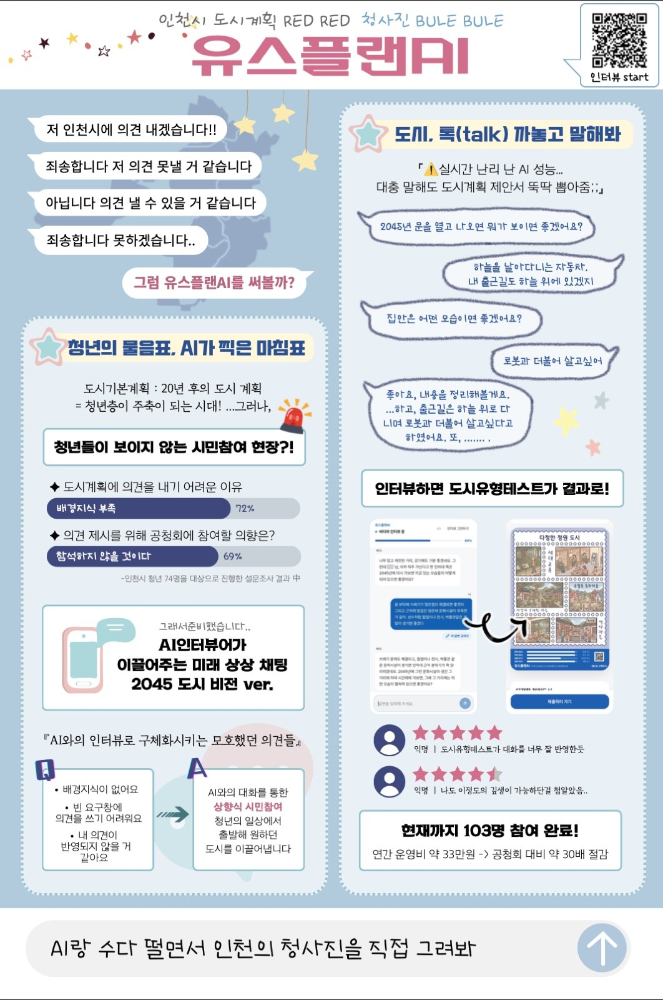

A-05


PHOTO · PANEL- 2026.06 – 09준비 · 개발 · 실증
- 2026.09인천시 청년정책공모전 장려상
- 2026.10인천시청 발표 및 청년 요구 데이터 전달 (예정)
청년이 AI 인터뷰어와 대화하며 2045년 인천에 대한 의견을 내고, 행정에서 활용 가능한 요구로 AI가 정리해주는 참여 도구입니다.
역할팀장 · LLM 설계 및 개발 · 기획 총괄